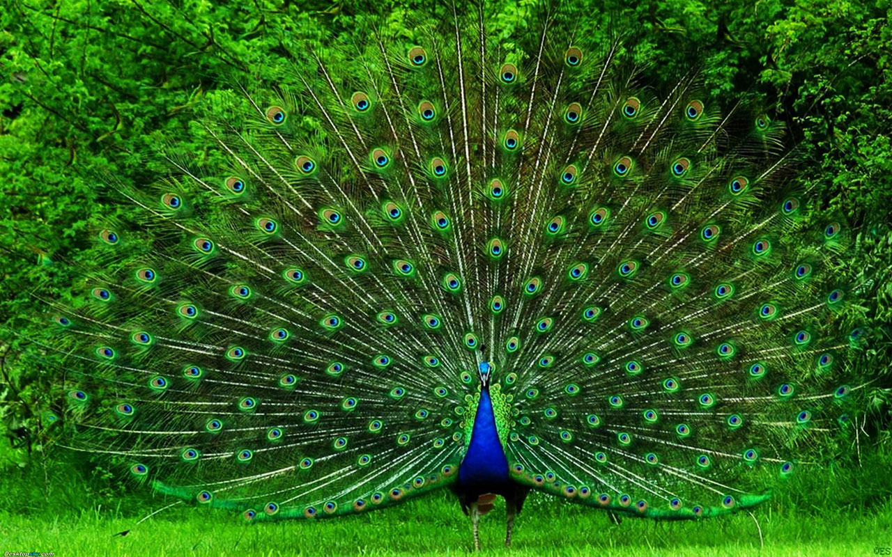

Peacock
Peacocks are large, colorful pheasants (typically blue and green) known for their iridescent tails.
- Scientific Name: Pavo cristatus
- Average Length: 100-120 cm
- Average Lifespan: 15 years
- Habitat: Forest Trees
Peacocks roam freely in the wild, taking cover up in the trees at night to sleep and avoid predators. A peacock that has access to water, food and shelter will not leave its immediate area. This is why peacocks roam freely around zoos without flying away.